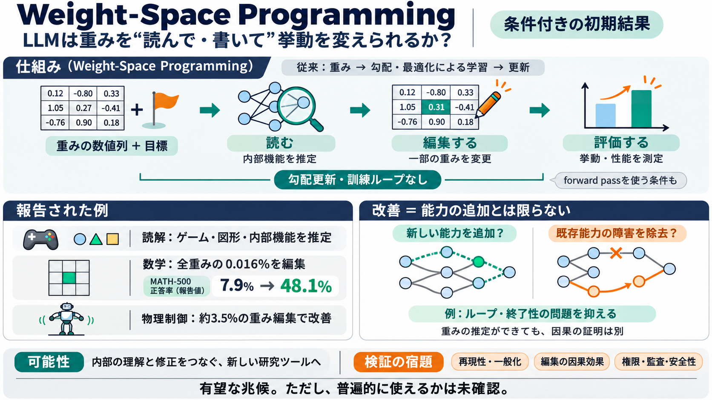

Computer Science
Frontier language models such as GPT 6 Astra have contributed to research mathematics, demonstrating substantial reasoni…

重みの“読み書き”
LLMは、ニューラルネットの「重み（weights）」をテキストとして受け取り、その意味を推定し、編集して挙動を改善できるのではないか。
英: Read / Write in Weight Space 日本語: 重み空間での読解・編集
なぜ“重み”が鍵？
通常、ニューラルネットの重みは「学習（勾配降下、バックプロパゲーション、PPOなど）」で更新します。
ポイントは「学習なし（少なくとも勾配・最適化ループ禁止）」でも、重み編集で性能が上がりうる、という点です。
言語 ↔ 回路
Weight-Space Programmingは「言語による推論」と「数値としてのパラメータ操作」を結びつける試みです。
要するに「人間の指示→重み操作」への“翻訳器”が現れるかもしれない、という方向性です。
Astraの初期実験
フロンティア級LLM（例: GPT-6 Astra）が、重みをテキストとして与えられたときに「何をしていたネットか」を当てる（推定する）報告があります。
中間層だけでも、学習言語や attention head（注意ヘッド）の役割を同定できる、とされています。
読み→書き→改善
重みを“少量編集”し、勾配や訓練ループを許さない条件でも性能改善が起きた、という結果が列挙されています。
ここは特に「改善が編集量に対して大きい」点が強調されています。
スケールと多様性
小規模ネットのゼロショット“書き起こし”から、1.5Mパラメータ級Goネットへ拡張し、forward pass回数で改善する流れが示唆されています。
英: sycophancy 日本語: 迎合（人に同調する振る舞い）
報告される8つの狙い
ポストでは、重みの読み/編集での能力を、タスク別に次のようにまとめています。
例: Qwen3.5-0.8Bの数学/指示追従が、forward passを用いた“診断と小修正”で大幅改善とされています。
“能力追加”ではない可能性
改善は「能力が増えた」だけでなく、「能力を邪魔する失敗要因（ボトルネック）が除去された」可能性が示唆されています。
Gemmaで大きな改善が出にくい点も、この見立て（任意の能力追加は難しい）を補強する示唆として読めます。
再現性の論点
「完全にゼロツール/ゼロ推論で一般通用」とは言い切れず、コンテキスト長・ハーネス・許可される操作が結果に効く可能性があります。
結局、ポストは“条件付きの初期結果”として読み、検証の宿題が残る段階だと位置づけられます。
強み：読解→編集→評価
MATH-500やIFEval、ゲーム得点など、定量ベンチマークに結びつきやすい形で提示されている点が、科学的評価への道を作っています。
英: mechanism interpretability 日本語: 機構的解釈（内部の働きを回路として理解する）の文脈とも相性が良い、と読めます。
懐疑：相関と因果
重み“読み”ができても、相関にもとづく推定であって、編集が因果的に効いているかは別問題です。
また、編集できるなら権限・監査・変更管理が必須（倫理・ガバナンスの課題）になります。
次に問うべきこと
この主張は「重み空間に対するLLMの読解・編集が、新しい研究ツールになり得る」という有望な兆候です。
現時点の読み方: 「フロンティア級の初期結果」だが、普遍性と因果の強度は今後の情報で確かめるべき段階。
Frontier language models such as GPT 6 Astra have contributed to research mathematics, demonstrating substantial reasoni…
Levi Rauchwerger, Stefanie Jegelka, Ron Levie. Neural Networks With Dense Weights Are Not Universal Approximators. NeurI…
and reasoning, this approach enables faster, smaller LLMs without accuracy loss. [...] ### SpQR: A Sparse-Quantized Repr…
small-data approach can improve upon existing NWP models in a minimally invasive manner using modest computational resou…
Designing machine learning architectures for processing neural networks in their raw weight matrix form is a newly intro…